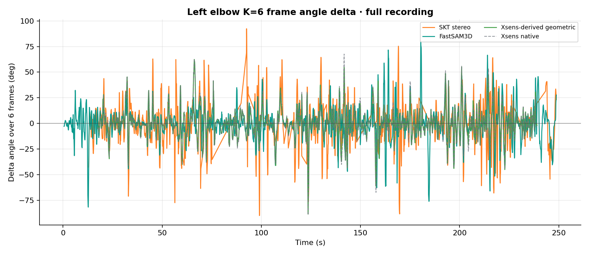
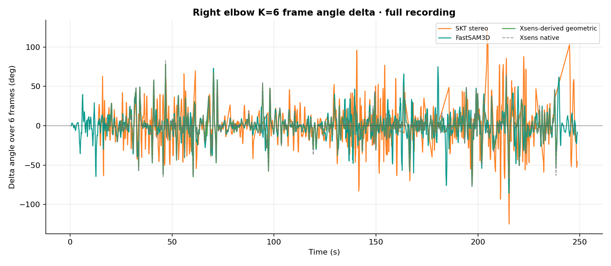
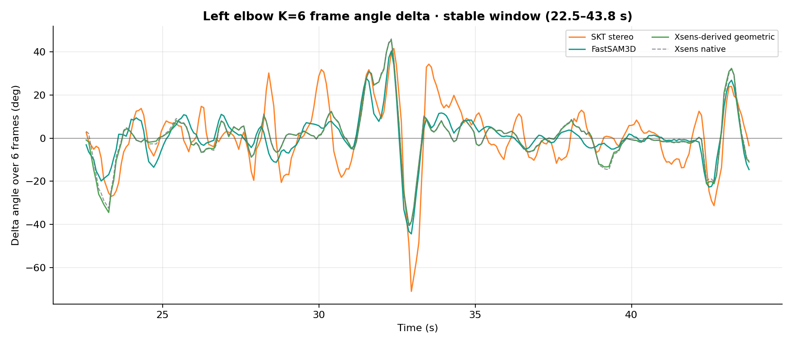
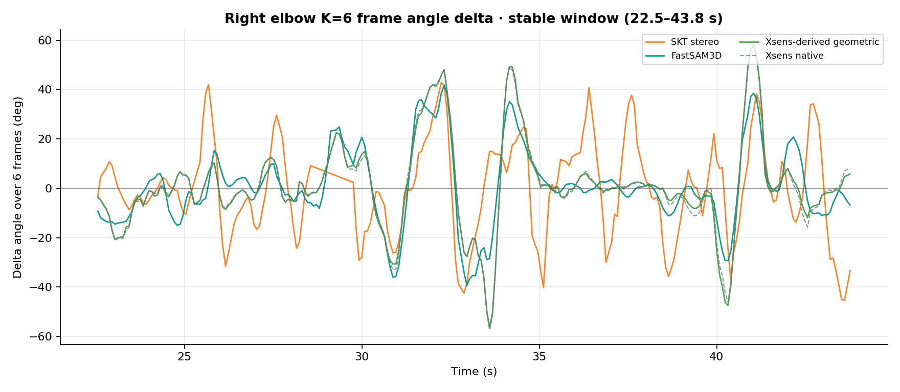

Two weeks ago we confirmed in the meeting that Xsens sensors can be worn in any orientation and rely on a calibration procedure to establish their reference frame. This calibration introduces a systematic angular offset into the output. As a result, directly comparing absolute values — "Xsens reads 80°, the vision system reads 90°, so the error is 10°" — is not meaningful, because the two systems do not share the same absolute reference.
However, Aitor pointed out a key property: although the absolute values are offset, the angular change from one frame to the next is not affected by this offset. This week we therefore shifted the evaluation focus from "how far apart are the absolute angles" to "do the systems track the same motion".
Instead of comparing the absolute angle at each frame, we compare the angular change over 0.48 seconds (6 frames at 12.5 fps). MAE (mean absolute error) is then computed between the change sequences of two systems.
The 0.48-second window was chosen deliberately: at the single-frame level (80 ms), sub-pixel keypoint noise is geometrically amplified into 4–6° of apparent motion per frame, making the signal-to-noise ratio too low to be useful. At 2 seconds, fine temporal detail is lost. At 0.48 seconds, the window corresponds roughly to the duration of a single natural sub-action such as one grasp or one elbow extension.
Results below cover the full recording (~248 s). Blue italic rows show the Xsens self-comparison baseline (physical lower bound).
| System | Elbow | MAE@K=6 | Pearson r | Stable Window MAE * |
|---|---|---|---|---|
| Xsens self-comparison (baseline) | Left | 0.9° | 0.988 | 0.3° |
| Xsens self-comparison (baseline) | Right | 0.7° | 0.996 | 0.7° |
| SKT (stereo triangulation) | Left | 10.6° | 0.503 | 6.8° |
| SKT (stereo triangulation) | Right | 12.4° | 0.422 | 12.6° |
| FastSAM3D (hybrid system) | Left | 8.9° | 0.300 | 5.0° |
| FastSAM3D (hybrid system) | Right | 9.8° | 0.287 | 6.5° |
* Stable window (22.5–43.8 s): a segment with higher keypoint detection quality and lower jitter. SKT left elbow and both FastSAM3D sides improve substantially, but SKT right elbow barely changes (12.4° → 12.6°), suggesting a persistent error source beyond keypoint quality for that side.
Each plot shows the 0.48-second angular change (Δangle) at every time step. The closer the four curves track each other, the better the systems agree on the same motion event.
Full recording (248 s)


Stable window (22.5–43.8 s, higher keypoint quality)


FastSAM3D curves tighten noticeably in the stable window, as does SKT left elbow. SKT right elbow shows almost no improvement, pointing to an additional error source beyond keypoint detection quality.
Absolute angle error only tells you "how many degrees apart." Motion-level evaluation can answer finer questions:
SKT's error is dominated by excess motion — keypoint noise artificially amplifies total elbow movement by roughly 1.57×, adding approximately 57% spurious motion on top of the true signal (visible as high-frequency spikes in the full-recording curves). FastSAM3D goes in the opposite direction: its total movement nearly matches Xsens (0.97×), but peak amplitudes tend to be suppressed. These two failure modes point to entirely different improvement strategies, which absolute error alone cannot distinguish.
In the stable window, SKT left elbow MAE drops from 10.6° to 6.8°, and FastSAM3D left to 5.0° (Pearson 0.73). This indicates that the primary error source in the full recording is keypoint localisation quality in low-quality frames, not a fundamental flaw in the skeletal geometry or angle computation.
Xsens native joint angles vs. geometrically re-derived angles differ by roughly 10° in absolute terms, yet their motion-level MAE is only 0.7°–0.9° with Pearson r = 0.99. This quantitatively confirms Aitor's observation: the Xsens calibration offset is a static DC bias that does not affect dynamic motion comparison.
FastSAM3D achieves a lower overall MAE than SKT, yet its RULA risk-bin agreement rate is lower (see below). The reason is that its peak angles are systematically suppressed, which causes activity segments to fall into the wrong risk category. Motion error and classification agreement must be reported separately — neither alone is sufficient.
RULA classifies elbow flexion into three risk levels (<60°, 60°–100°, >100°). From the full recording, 12 left-elbow activity segments and 15–16 right-elbow segments were automatically detected; the peak angle in each segment was classified and compared against the Xsens-derived reference.
| System | Left agreement | Right agreement | SKT within one bin |
|---|---|---|---|
| Xsens self-comparison (baseline) | 91.7% | 100% | — |
| SKT | 58.3% | 53.3% | 100% |
| FastSAM3D | 41.7% | 33.3% | — |
SKT reaches 100% agreement when a one-bin tolerance is allowed, meaning classification errors never skip a risk level — a high-risk segment is never misclassified as low-risk. FastSAM3D's lower agreement rate is consistent with Finding ④: suppressed peak angles shift segments into the wrong bin.
RULA classification is based on peak angles within each activity segment and is independent of the MAE@K=6 metric. Reporting both provides a more complete picture of system performance.